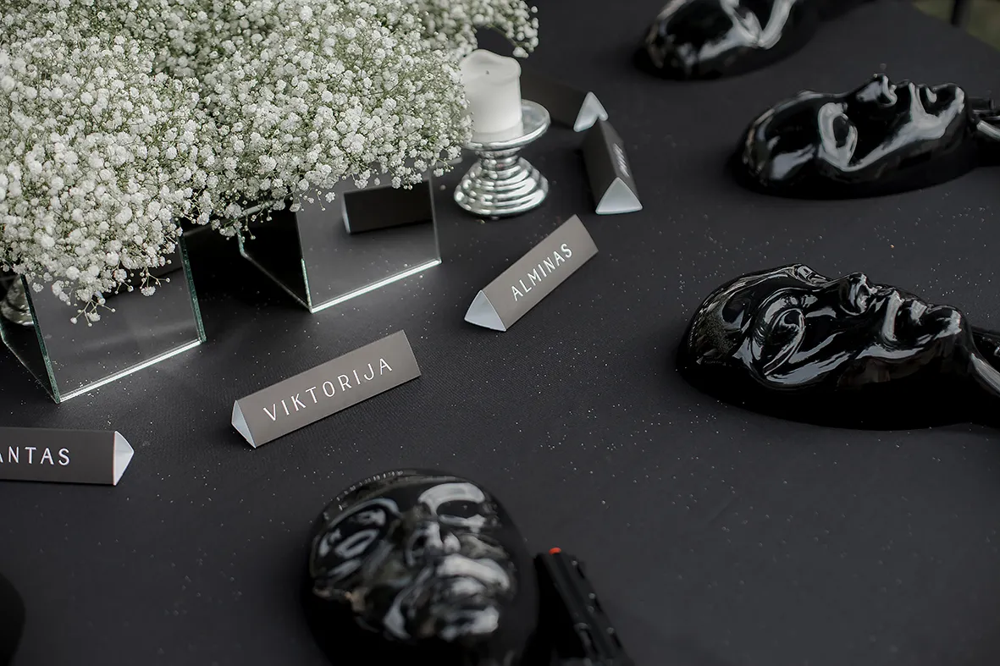
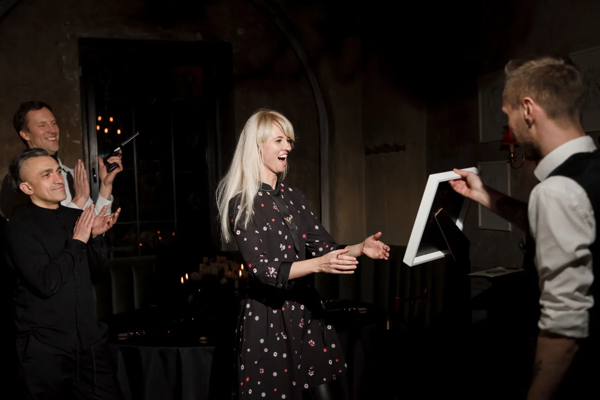
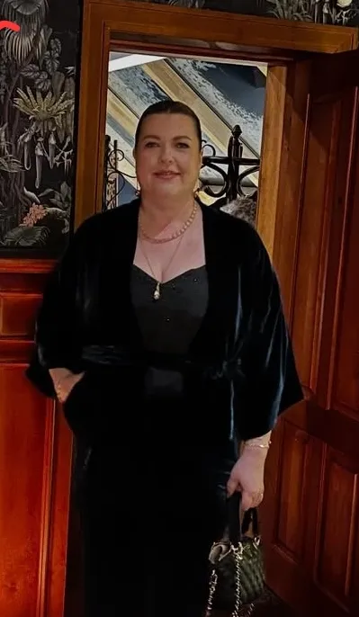
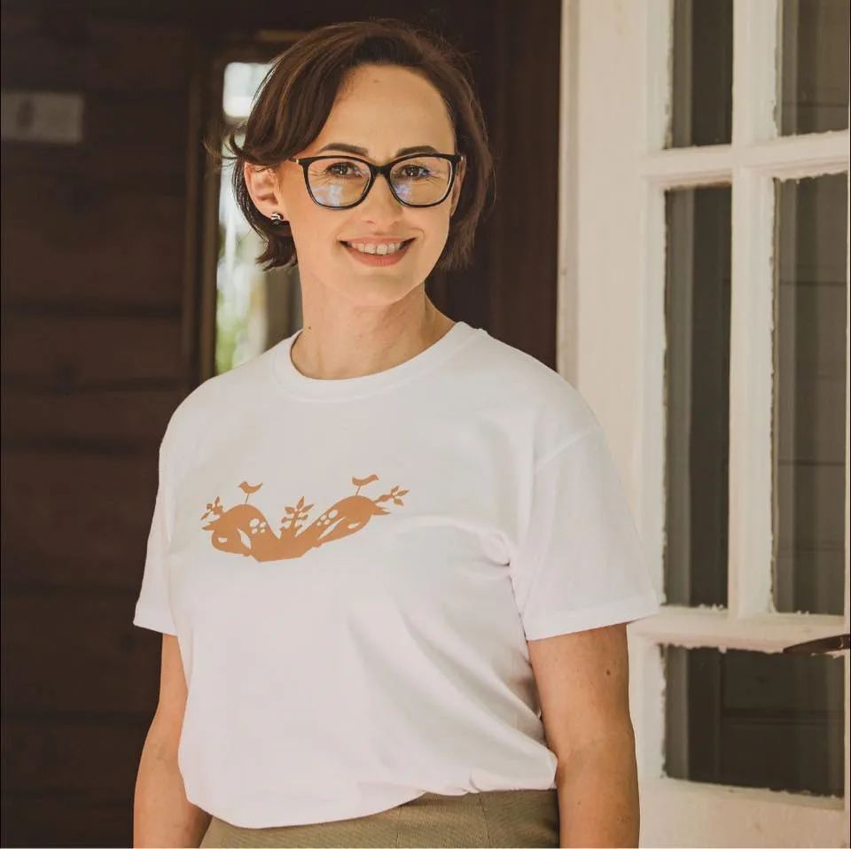
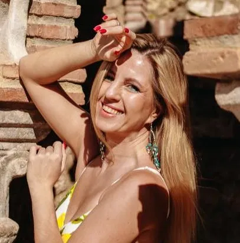
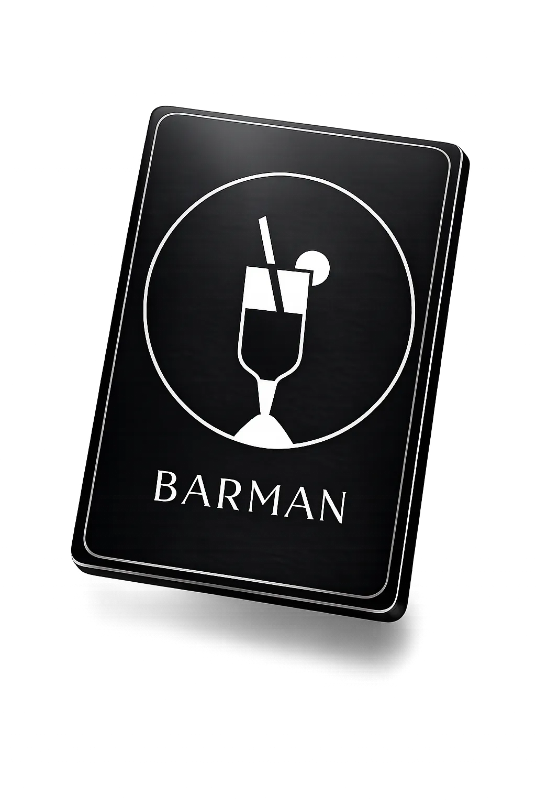
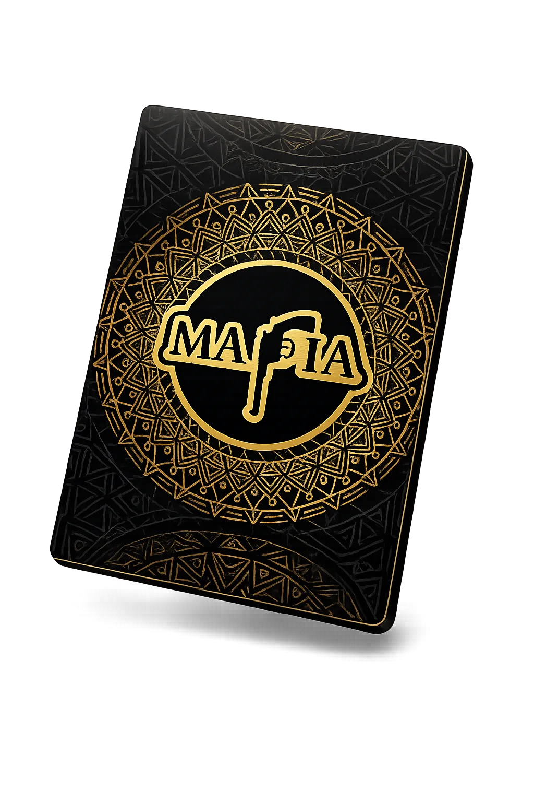

Как создать комфортную атмосферу?
Мероприятие может проходить по разным сценариям, но важно создать основу, которая поможет гостям чувствовать себя уютно, спокойно и уверенно. Мягкое освещение, комфортная температура в помещении, вкусная еда, немного цветов и чёткая координация по времени помогут создать уютную атмосферу и позволят гостям расслабиться. Когда участники освоятся и почувствуют себя на своём месте, общение станет искренним, а вечер — весёлым.
Как проходит программа вечера?
Рекомендуемый план вечера: выделите 30 минут на сбор гостей. Пока все собираются, предложите им закуски и освежающие напитки. Помните, что каждый приходит со своими впечатлениями и эмоциями после прошедшего дня, поэтому важно дать гостям время освоиться. Для этого отлично подойдут свободное общение и ужин. Когда все поедят и привыкнут к обстановке, можно начинать интерактивную программу.
Общая продолжительность программы Около 3 часов.
Сначала мы представим гостей друг другу, учитывая их личные качества и профессии. Это поможет навести «мосты» между незнакомыми людьми и создаст основу для дальнейшего общения.
Первую десятку участников мы случайным образом пригласим за круглый стол. Каждый гость получит именную карточку, на которую можно будет посмотреть, если участники ещё не знакомы друг с другом. Перед началом игры мы расскажем о правилах игры «Мафия» Во время сессии будем напоминать участникам о функциях персонажей и ходе игры.

Всего состоятся три игровые сессии — этого достаточно, чтобы участники освоили правила и начали получать удовольствие от игры. Между сессиями предусмотрены перерывы, во время которых можно обсудить эмоции и впечатления. После игры ведущий поделится яркими моментами вечера и вручит номинации.

После завершения программы гости обычно продолжают делиться впечатлениями друг с другом. Вот несколько отзывов наших клиентов:
Rūta
«Психологическая игра „Мафия“ оказалась невероятно весёлой, захватывающей и эмоциональной и оставила у меня сильное, незабываемое впечатление. Не ожидала, что ролевая игра может вызвать столько ярких и неожиданных эмоций! Рекомендую всем, кто хочет провести необычный, интригующий и очень весёлый вечер с друзьями или коллегами. И отдельное спасибо Олегу — его спокойствие, профессионализм и прекрасное чувство юмора просто покоряют!»

Lina
«Огромное спасибо за профессионально организованный день рождения! Ресторан — 10 из 10! Оформление столов — 10 из 10! Цветы до сих пор радуют глаз — просто идеальные. Игра и работа ведущего — тоже на 10 из 10! Впечатлений хватило на всё воскресенье 😊»

Vaiva
«Игра „Мафия“ с Олегом в роли ведущего превзошла все ожидания. Каждая деталь была тщательно продумана и безупречно исполнена! Создана потрясающая атмосфера! Даже те участники команды, которые не сидели за игровым столом, были увлечены происходящим. Всем было интересно наблюдать, кто и почему 🙂 что говорит, как именно говорит и какие сигналы подаёт! Было интересно увидеть коллег в других ролях! Так и хотелось снова и снова возвращаться к этому прекрасно оформленному столу! Все воспоминания сохранились на замечательных фотографиях!»
Сколько гостей может участвовать в мероприятии с игрой «Мафия»?
При заказе одного игрового стола максимальное количество участников — 30 человек.
В каждой игровой сессии за одним столом могут участвовать до 10 гостей.
- Если гостей 30, каждый сыграет один раз.
- Если гостей 10, каждый сыграет три раза.
- Если гостей 20, некоторые участники — те, кто выбывает первым, — сыграют дважды, а остальные — один раз.
Сколько игровых столов оптимально?
Если гостей не больше 20, а цель мероприятия — уютно провести время, лучше узнать себя и друзей, я рекомендую формат с одним игровым столом. Он позволяет глубже погрузиться в игру, даёт участникам больше возможностей для экспериментов и позволяет исследовать себя с помощью разных тактик.
Если гостей от 20 до 60 и главная цель — весело провести время, мы рекомендуем формат с двумя игровыми столами. В игру будут добавлены уникальные персонажи, темп вечера станет динамичнее, а мероприятие будут вести два ведущих.
Не скучно ли тем, кто выбыл из игры или ждёт своей очереди?
Чаще всего гостям интересно наблюдать за игрой со стороны:

Jūratė
«Большинство гостей праздника раньше не были знакомы друг с другом, но благодаря этой игре мы все увлеклись процессом, активно участвовали, придумывали жизненные истории и распутывали детективные загадки. Играть было очень интересно, но наблюдать за игрой со стороны было ничуть не менее увлекательно — ведь можно видеть роли, которые исполняют участники».
Какие правила и роли используются в формате MafiaInLT?
Дневная фаза:
Ведущий завершит объяснение правил и раздаст 10 конвертов. В трёх из них будут карточки с ролями мафии, в остальных семи — карточки мирных жителей. Если вам достанется роль мафии, ваша задача — устранить всех мирных жителей и при этом не вызвать подозрений. Если вы получите роль мирного жителя, вам предстоит интуитивно или логически вычислить мафию и исключить её участника из игры путём голосования.
Первый круг — знакомство игроков. Каждый по очереди рассказывает историю. Этот круг помогает раскрыть творческие способности участников и требует внимательности. Второй круг — обмен подозрениями. На этом этапе ведущий познакомит участников с техниками, которые помогают замечать собственные чувства и понимать, что они могут означать. Третий круг — общее обсуждение, после которого проводится голосование. По его итогам один из игроков выбывает из игры.
Ночная фаза:
Все участники надевают маски, чтобы не видеть происходящего вокруг. Ведущий по очереди вызывает персонажей: мафию, доктора, шерифа, адвоката и дополнительного специального персонажа этой сессии. Каждый персонаж выполняет свою задачу. Когда ведущий объявит об окончании ночи, участники смогут снять маски. Игра заканчивается, когда из игры выбывают все члены мафии или все мирные жители.


Некоторые персонажи и отдельные игровые механики (например, способ проведения голосования) являются уникальной интеллектуальной собственностью клуба.
Предоставляем ли мы помещение для игры «Мафия»? На что обратить внимание при выборе площадки?
Собственного помещения у нас нет, но мы помогаем подобрать и забронировать подходящую площадку.
Прежде всего важна приватность: зал должен быть отдельным, чтобы через него не проходили посторонние. Если мероприятие проходит днём, желательно, чтобы в помещении были окна: естественный свет обычно улучшает настроение. Для вечернего мероприятия лучше подойдёт мягкое рассеянное освещение, создающее уютную атмосферу. Температура в зале должна быть комфортной с учётом времени года. Если планируется ужин, стоит предусмотреть отдельные столы для гостей. Если будут только закуски и напитки, понадобятся удобные высокие столики.
Если вы хотите провести мероприятие у себя дома, убедитесь, что для нашего стола диаметром 180 см и 11 стульев вокруг него достаточно места. А чтобы создать вдохновляющую атмосферу, рекомендую дополнительно заказать оформление пространства: цветы добавят интерьеру красоты и оживят его.
Чем организация игры отличается от организации мероприятия под ключ?
Организация мероприятия под ключ включает более широкий спектр услуг: вам останется только приехать на площадку, а обо всём остальном позаботимся мы. Мы подберём подходящее место с учётом ваших пожеланий, спланируем программу, заранее согласуем меню и оформим пространство. В день мероприятия координатор встретит гостей, подскажет, куда пройти, и поможет сориентироваться.
Если же вы предпочитаете организовывать праздник самостоятельно и вам нужна только интерактивная часть программы, достаточно заказать организацию игры.
Создайте своё мероприятие
Выберите количество игровых столов, дату мероприятия и необходимые услуги.
Рассчитать стоимость